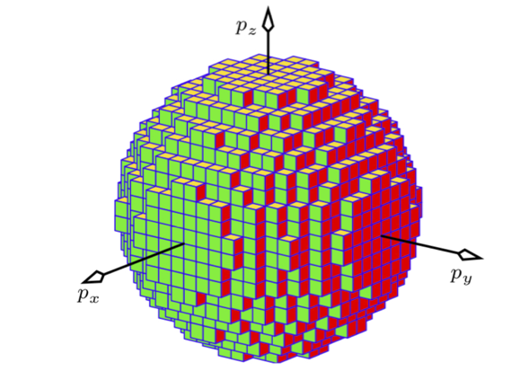

NVE#
What you need to know
Understand that the essence of equilirbium statistical mechanics is connecting thermodynamics operating at macroscopic scales with the microscopic states of atoms and molecules.
The macro-to-micro connection is established using probability arguments with Entropy playing the central role (Boltzmann equation) From the thermodynamics point of view, an isolated system with N particles, fixed volume, and Energy is a single macrostate. Such a system, however, would consist of a vast number of microstates. The number can be quantified for some simple systems analytically but is generally intractable even using computers!
In StatMech we replace the dynamics of N particle system with an ensemble of all possible microstates that the system can be consistent with a macrostate (NVE).
Ensemble essentially gives us a probability distribution over microstates, which allows the calculation of Entropy.
Through entropy, all kinds of substance-specific thermodynamic quantities can be computed from the first principles.
E.g., heat capacities, magnetic susceptibilities, free energy differences. These quantities serve as an input for thermodynamics because thermodynamics does not refer to the microscopic world.
Thermodynamics while agnostic to atomic details is an exact theory. Predictions of statistical mechanics must obey the rules of thermodynamics.
Boltzmann’s equation: “A bridge” between microscopic dynamics and macroscopic thermodynamics#
Consider an isolated fluid system with \(N=const\), \(V=const\) and \(E=const\) which we will refer to as NVE system. What should be the probabilities of various states sampled by this system?
It is clear that in the absence of any other information, no states should have higher probabilities than others. This is known as “principle of equal a priory probability”
Mathematically, this can be expressed by maximizing entropy \(S=-\sum p_i log p_i\) with no constraints other than normalization. We end up with \(p_i = \frac{1}{\Omega}\) for all \(i\) microstates since we have no objective reason to favor any one microstate.
\(\Omega\) is the number of micro-states consistent with a macrostate of our system.
\(S(N, V, E)\) is the entropy of an isolated system (we are in the NVE).
\(k_B =1.380649\cdot 10^{-23} J/K\), Boltzmann’s constant
Computing number of microstates \(\Omega\) using quantum mechanics#
A collection of up/down spins#
Consider a single spin atom under an external magnetic field \(B\). The system can be in two states with energy \(\epsilon = −m_z B\) where \(m_z=\pm \mu\) is the spin magnetic number and \(\mu\) magnetic moment of the spin. Generalizing to N spins is straightforward
\(N= N_{\uparrow} + N_{\downarrow}\) total number of spins
\(M = N_{\uparrow} - N_{\downarrow}\) overall magnetization
\(m = M/n\) magnetization per spin ranging from -1 to +1.
The energy is sum of independent spin energies \(E = \sum^N_i \epsilon_i = -N_{\uparrow}\mu B + N_{\downarrow}\mu B = -\mu B (N_{\uparrow} - N_{\downarrow}) = -\mu M B\).
To find number of microstates for a given \(E\) we need to find a number of ways to partition \(N_{\uparrow}\) and \(N_{\downarrow}\) spins.
Find temperature dependence by using \(\frac{1}{T} = \frac{\partial S}{\partial E}|_N\)
magnetization per spin \(m=-U/\mu NB\) is given by:
A collection of harmonic oscilaltors#
Consider a single 1D harmonic oscillator \(E_n = \hbar \omega (n+1/2)\) with \(n = 0, 1, 2, ...\) This system has infinitely many but still countable number of states.
Consider three harmonic oscillators \(E(n_1, n_2, n_3) = \hbar \omega (n_1+ n_2+n_3) + \frac{3}{2}\hbar \omega\). System with energy \(5/2 \hbar\omega\) can be in (1, 0, 0) or (0,1,0) or (0,0,1) microstates.
Now consider N harmonic oscillators. This can describe N atoms in a crystal, each vibrating around its mechanical equilibrium state independet of each other (“Einstein model”).
The question boils down to finding how many states correspond to \(n_1+n_2+...n_N = M\). In other words what is the degeneracy of the state correspodning to the total quantum number M?
The question is answered by partitioning M quanta of energy among N oscillators. This is same as finding number of ways of putting M ideantical balls into \(N-1\) boxes.
Monoatomic ideal gas#
Quantum density of states of an ideal gas

A sum over all total quantum number of N 3D particles in a box ends up being a problem of finding the volume of an N-dimensional sphere
Classical density of states of an ideal gas
Where \(\delta V(R)\) is a volume of a spherical shell with radius \(R = (2mE)^{1/2}\) and thickness \(\delta R = 1/2 (2m/E)^{1/2} \delta E\)
Volume of a sphere in N dimesnional space
For \(D\rightarrow \infty\) we discover that most of the volume of the sphere is concentrated at its surface!
Classical density of states of an ideal gas#
Note linear dependence on N. Entropy is an extensive quantity!
exponent 3/2 reflexts that each particle has 3 degrees of freedom
\(\lambda = \Big(\frac{3h^2 N}{4\pi m E}\Big)^{1/2}\) thermal de Broglie wavelength.
This result know as “Sackur Tetrode equation” was known long before statistical mechanics.
Thermal, Mechanical and chemical equilibrium#
The number of microstate for a system consisting of two parts can be written as a sum of all posisble energy partitionings among the two states.
Since \(\Omega(E)\) is a sharply increasing function of energy we expect the maximum term for some energy \(E_1=U_1\) to dominate the sum. Let us find what state this maximum value should correspond to?
Example: thermal contact between two ideal gases#
Recall that for ideal gas we have \(\Omega(E) = C V^N E^{3/2 N}\). Therefore for an ideal gas we will have:
Using definition of entropy we get the most probable value of energy \((U_1)\) corresponding to the equilibirum state
Equations of state for ideal gas#
Quasistatic process and Irreversibility#
From the NVE ensemble reasoning, we can now state that a quasistatic process corresponds to a process that does not change in the number of microstates. That is removal of a constraint keeps the “volume” of microstates intact.
On the other hand, once the number of microstates grows upon removal of a constraint, then re-instating the constraint will not shrink the “volume” of microstate space.
Problems#
Shottky defects#
Schotky defects are vacancies in a lattice of atoms. Creating a single vacancy costs an energy \(\epsilon\). Consider a lattice with \(N\) atoms and \(n\) vacacnies. In this model the total energy is solely a function of defects: \(E=n\epsilon\)
Write down number of states and compute the entropy via Boltzmann formula. Plot number of states as a function of energy. You can use log of number of states for plotting.
Compute how the temperature would affect the fraction of vacancies on the lattice. Plot fraction of vacancies as a function of temperature.
How would the total energy depend on temperature \(T\). Derive expression for the high temeprature limit (\(\frac{\epsilon}{k_b T} \gg 1\)).
Plot total energy as a function of temperature E(T)
Lattice gas#
Consider a lattice gas of N particles distributed among V cells (with \(N\geq V\)). Suppose that each cell may be either empty or occupied by a single particle. The number of microscopic states of this syste will be given by:
Obtain an expression for the entropy per particle \(s(v)=\frac{1}{N} \cdot S(N,V)\) where \(v=\frac{V}{N}\).
From this simple fundamental equation, obtain an expression of equation of state \(p/T\).
Write an expansion of \(p/T\) in terms of density \(1/v\). Show that the first term gives Boyle law of ideal gases.
Sketch a graph of \(\mu/T\), where \(\mu(\rho)\) is a chemical potential as a function of density. Comment on \(\rho\rightarrow 0\) and \(\rho\rightarrow 1\) limits.
Polymer Elasticity#
Solve the problem 2.7 from the book.